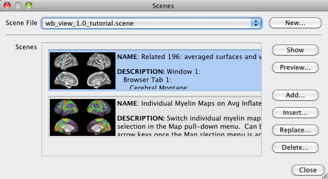

Scenes Window
The Scenes Window is the interface to
save the current Workbench session (loaded files and settings) as
a Scene
(in a .scene file). Scenes allow one to save a snapshot of a
Workbench session that contains a record of all of the files
loaded and view settings, making it easy to get to a specific
display. Using scenes, one can "pick up where they left off"
when reopening Workbench.
- Scene File selection is used to
choose among loaded Scene files. Use File>Open
File... to load an existing scene file and have it
show up in this selector.
- New... button creates a new
Scene File. A new Scene File is created with no scenes
within it. Add any number of scenes with the Add
button.
- Show
loads the active (highlighted in blue) scene. Double
clicking on a scene's title/description will also show the
scene.
- Preview... opens a separate window with an enlarged
display of the highlighted scene's thumbnail along with the
name and description.
- Add... creates a new scene
within the current Scene File and adds it to the bottom of
the list of scenes. The scene needs to be set up
before clicking this button.
- Insert... creates a new scene
that is added to the scene list above the currently
highlighted scene.
- Replace... is used to modify an existing scene. The highlighted scene
will be overwritten at the time the Replace button
is clicked, therefore make scene changes before clicking
this button. When a scene is replaced, the
name/description of the scene can also be edited.
- Delete... allows one to delete a
highlighted scene from the Scene File.
Note: All additions and modifications to a
scene file are not ultimately saved (to disk) until one clicks Save
checked files in Save/Manage
files (accessed from the File menu).
